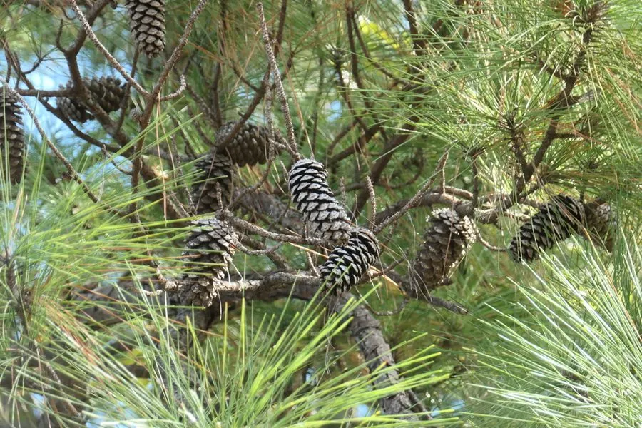

乔木 · 植物界
火炬松 Pinus taeda

原产美国东南部的速生松树，针叶三针一束、球果簇生枝头，是南方重要的用材与纸浆林树种。
- 分类
- 门裸子植物门纲松柏纲目松柏目科松科属松属
- 栖息环境
- 海拔 800 米以下的丘陵、岗地与平原，喜光耐瘠薄
- 地理分布
- 原产美国东南部，中国长江流域以南及华南引种栽培
- 保护级别
- 暂无评估；中国未列入国家重点保护野生植物名录
物种志
火炬松为常绿针叶乔木，高可达 35 m，树干通直，树皮红褐色、呈鳞片状纵裂；针叶 3 针一束，长 12–25 cm，稍扭曲，在枝端丛生。雌雄同株，雄球花圆柱形、簇生于新枝基部，雌球花生于枝顶；球果卵状圆锥形，长 6–15 cm，常 2–5 个簇生于枝头，成熟时红褐色。
火炬松原产美国东南部，中国长江流域以南及华南地区引种栽培，喜光、耐瘠薄，适宜酸性红壤，生长迅速。木材轻软、纹理直，是建筑、胶合板与纸浆的重要原料；松脂可提炼松香与松节油。火炬松适应性强、成材快，是中国南方重要的速生用材林与纸浆林树种，但易受松材线虫病危害，需加强检疫与防治。
形态与习性
- 株高可达 35 m，胸径可达 1 m
- 花期3–4 月，雄球花簇生
- 球果成熟翌年 10 月，常 2–5 个簇生
- 光照强阳性，不耐庇荫
- 土壤酸性红壤，耐瘠薄
- 主要用途建筑与纸浆用材、采脂提炼松香
趣味知识
- 火炬松的球果常 2–5 个簇生在枝头，像一簇小火炬，因此得名。
- 火炬松生长迅速、成材快，是中国南方重要的纸浆林树种。
- 火炬松易受松材线虫病危害，引种栽培需加强检疫。